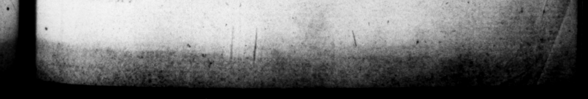

. *F * Wwe Ev. 3 £& © —% 7. 7 Sy. + ** c. CASA Lugdnni miſcellos, Sed certamen ue Greece tinaque facundte, quo cerra R & Lamine ferunt victoribus præmia victos contuliſſe, eorundem & laudes componere coactos, Eos autem qui maxime diſphcuiſſent, ſcripta ſua ſpongia. linguave delere juſſos, nifi ferulis objurgari aut flumine pro xima mergi malurflent, 21. Opera ſub Tiberio ſe. miperfecta, templum Anguſti theatrumque Pompeji ahſol. vit. Inchoavit autem aqua» ductum regione Tiburi, & Amphiteatrum juxta Septa : uorum operum $ ſucceſſore . = Clandio, alterum peractum, omiſſum alterum eſt. Syracuſis collapla veruſtate meœnia, Deorumque des refectæ. Deſtinaver at & Sami Polycratis regiam reſtituere, Mileti Didymeum peragere, in jugo Alpium urbem condere, fed ante omnia Iſthmum in Achaja perfodere, Mile. ratque jam ad dimetiendum opus primipilarem. 22, Hactenus quaſi de prin · ciye, reliqua ut de monſtro narranda ſunt. Compluribus cognominibus aſſumptis (nam & Pius & CASTRORUM Fitivs, & PaTER ExERCITUUM, & Orr. MAX. CK AA vocabatur) cum audiret forte reges, qui officii cauſſa in urbem advenerant, concertantes a ſe ſuper cœenam de ilitate generis, exclamavit, Ex *:Ipay0s 18%, Ee Samide. Nec multum abfuit quin fta tim diadema ſamerer, ſyeciemne principatus in regni vrmam converteret. Verum admonitus, & principum & regum ſe exceſſiſſe fi gin, | qivinam ex eo maſeſtatem ſerere ſibi cepit, Dato zue negot io, ut ſimulacra numihum religione && arte preclara, / 9 CALIGULA =» > = 5 We eas in the next riuer, © 1 imperfect by Tiberius, that is, the 2 of a 45, —— fo on pe. He ikewi duct . the n f and an Amphitheatre nigh 2 2 2 of which works the one was his ſucce ur Clandits, amd the other let alone. The walls. as Syracuſe, that by length of time were mel ruin, were r:paired, as aſe t ples of the Gods. He 2 fo Yebuild the palace of Polycrates at Samos, to finiſh the temple of the Didymæ an at Miletus, to build A tity upon the top of the Alps, but abrye at things. to make a cnt through the Iſt he, mus in Achaia :. and ſent's centurion of the rſt rank to meaſure our the © work. e Thus far we have ſpokin of him a*— As remains to fry of4 Prince. m beſpeak him rather a monſter than a man. He aſſumed various titles, as Dutyfal, the ſon of the camp: the father of the armys, and the greateſt and the beſt Cæſar. And upon bearö kings, that came to the city © e to him, contending among} themſclyes at , about — . of their birth, he. cried out, Let there be but one prince, one king. And he was flrongly minded to have taken a diadim imimedia'ely, and to have turned the impertal ni ij into the form of a kingdom. But being told, that be had fav exceeded 7 of princes and kings, he. upon that begun to claim to himſelf & divine maj'fly. And baut red all the images of the G. were fans for the veneranien bein 21, H- finiſbed the works that were theatre 2 4 that paid . o 9 + « * 5 p * a = 1 +4 — - w . > 24 q >
